Android hands-on
advanced learning
By Resourcepool
Table of content
Introduction
Any ideas of the numbers?
 june 2016
june 2016
Let's talk about money!
How much was whatsapp sold for ?
22 billion $
Lesson objectives
//todo add images of the appEnvironment
What are the major challenges faced by android application developers?
Screens
Versions
Network and energy


How does it work?
JVM vs DALVIK ?

Next fight : ART vs DALVIK
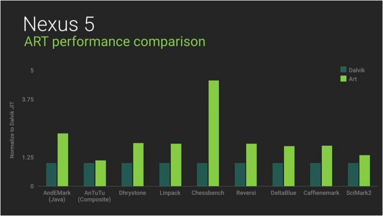Architecture
Go Android, build my app!
- Android Studio: http://developer.android.com/tools/sdk
- Official documentation: http://developer.android.com

Project structure
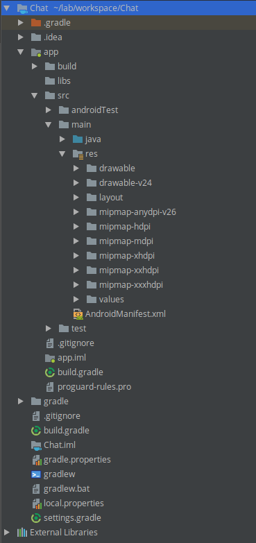The manifest
Layouts
WYSIWYG
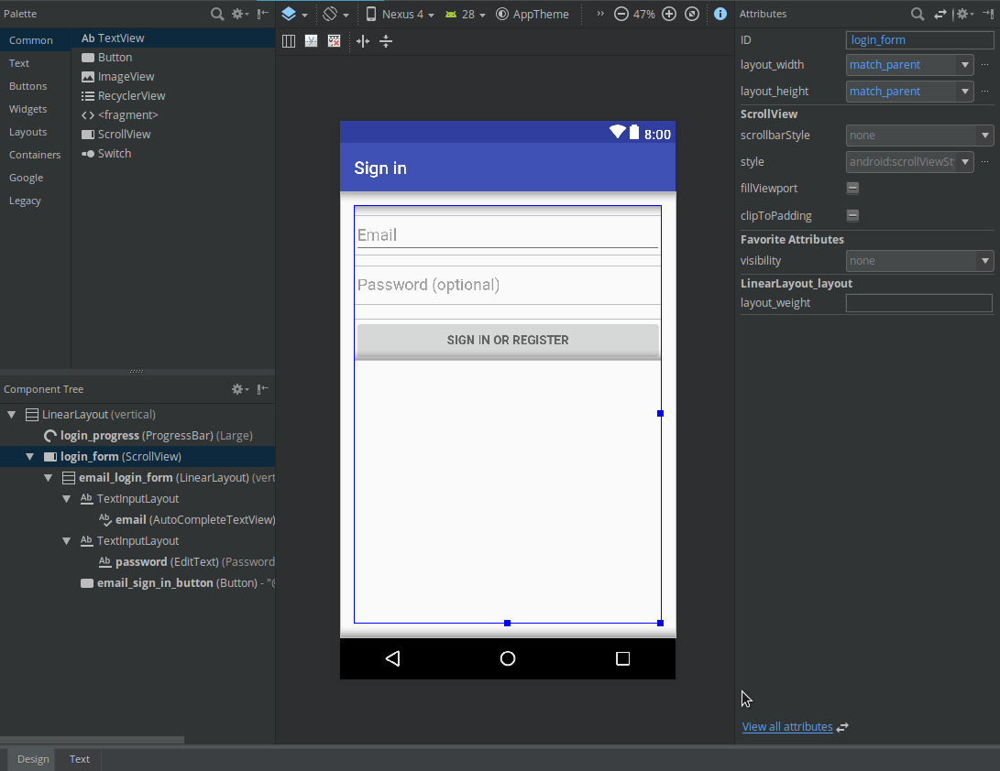Linear layout
 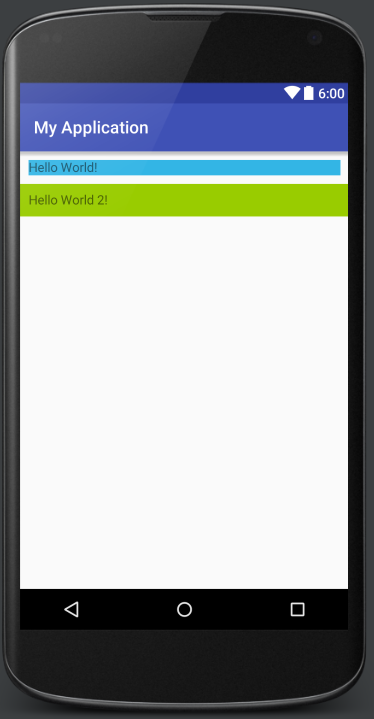
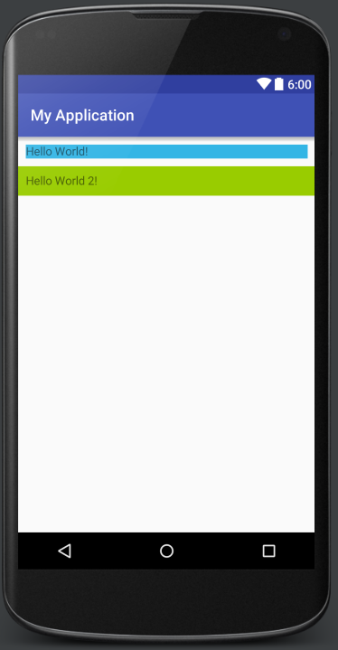
Relative layout
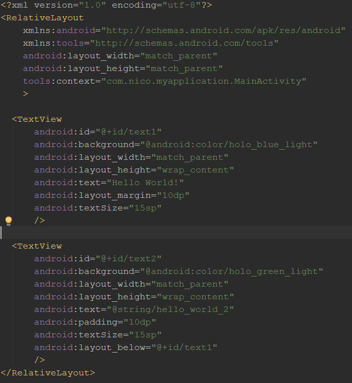XML ToolBox
- Margin
- Padding
- layout_below / layout_above
- layout_toEndOf / layout_toStartOf
- layout_centerHorizontal / layout_centerVertical
- layout_centerInParent
Lets play
The goal of this exercise is to build the login page. The first step is to create the view. View are generated with layouts, try to use them to reach the following screen. The view contains two edit text, a header and a validation button.
Toolbox:
TextView to display a simple text
EditText allows the user to write a text
ScrollView to scroll the contents
Button guess what, a button
The best way to start with layout is to add background color to layouts, it will help you with margin, padding... To do so use :
android:background="#ttrrggbb"
tt : from 00 to FF for transparency

Bonus
From the menu in the login page, open a new activity. In this new Activity try to reproduce the following image

Views and activities
Start an Activity
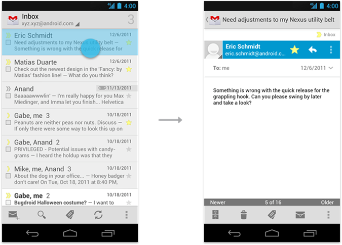Backstack

Backstack

Life cycle

Activity life cycle
The objective of this exercise is to understand the states of the activity. We are going to use Android API to log those events.
Log.i(TAG, "onCreate!");
A common practice is to add a TAG to the class for all logs.
public class ParlezVousActivity extends Activity {
private final String TAG = ParlezVousActivity.class.getSimpleName();
Override the following methods and add some explicit logs :
onCreate, onDestroy, onPause, onResume, onSaveInstanceState, onRestoreInstanceState
What happens when:
You start the application,
You receive a call,
You change your phone orientation (Ctrl+F11 for the emulator),
You close the app ?
User interactions
It's now time to listen and handle the view from the activity. We are going to add some behavior in our login page. In the onCreate method of the activity, recover the objects of the view you want to manipulate. Use the findViewById() method:
Log.i(TAG, "onCreate!");
private EditText usernameField;
@Override
protected void onCreate(Bundle savedInstanceState) {
super.onCreate(savedInstanceState);
setContentView(R.layout.activity_main);
usernameField = (EditText) findViewById(R.id.username_field);
Add a listener on the buttons, it can either be in or outside of the class. Implement the "Clear" button and the "Send" button, when the send button is clicked show a toast.
Toast.makeText(this, "Toast !", Toast.LENGTH_SHORT).show();
Bonus
Add some validation on the fly or at the button click. Check that the fields aren't empty and the password is at least 3 characters. To display the error, use a classic TextView and chagne its visibility.
setVisibility(View.VISIBLE);
If you still have time you can start to use Butter Knife, a cool way to load view and catch user interactions.
Thread and web services
UI-Thread
Only one thread can modify the view. It's the Ui thread (Main thread). This thread is also responsible for all client interaction with the app.What happens if you do heavy jobs in this thread ?

Asynctask

How does it work?
Start the async task :AsyncTask params
The three kind of params used by the asyncTask are:- Params,the type send at the execution.
- Progress, the type send to the progress.
- Result, the type send at the end of the asynctask.
Network call
Login on the server
The objective of the exercise is to send our previous form to a REST web service.
First thing first, we need to add the internet permission.
Do you remember where ?
AndroidManifest.xml
<uses-permission android:name="android.permission.INTERNET" />
Create the LoginTask that extends android.os.AsyncTask.
In the onPreExecute method, display a loading wheel.
In the onPostExecute method, hide the loading wheel.
In the doInBackground method, execute your network call
Use the following url:
http://training.loicortola.com/parlez-vous-android/register/[username]/[password]
The HTTP method to use is: GET
Status 200-OK JSON response {"status":200,"message":"Login
successful"} if everything went well.
Status 401-UNAUTHORIZED JSON response
{"status":401,"message":"...","elements":"..."} if login or/and password provided are not correct
Lists
Lists
How would you build a list ?
What happens if you have more than 4000 elements ?
So how is it done ?

ListView
ListView is a view group that displays a scrollable list of items. The list items are automatically inserted to the list using an Adapter that pulls content from a source such as an array and converts each item result into a view that's placed into the list.Single element
Now that we have a container we need to add elements in it, so we create a new xml for the view of a single element.Create an xml : element_message.xml with two TextView, one for the message, and an other one for the author.
Base adapter
Lets merge it
LitView vs RecyclerView
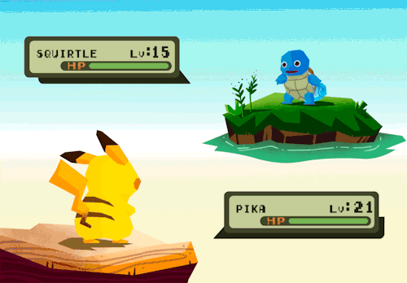The RecyclerView since Lolipop
- View holders
- Layout Manager
- Item Animator
- Item Decoration
The RecyclerView
The adapter
Retrieve messages
Infinite scroll
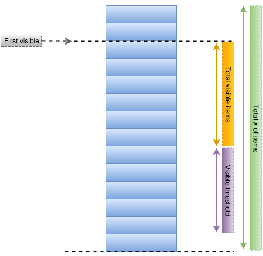Give me more
Les images
Picasso Glide
repositories {
mavenCentral() // jcenter() works as well because it pulls from Maven Central
}
dependencies {
compile 'com.github.bumptech.glide:glide:3.7.0'
compile 'com.android.support:support-v4:19.1.0'
}
Glide.with(this).load("http://goo.gl/gEgYUd").into(imageView);
ButterKnife

Go check the lib: Butter Knife
The problem :
- findViewByID() over and over again
- 1000 of listeners for onClick, onTextChanged...
- The size of the onCreate() method
Comparison
Retrofit
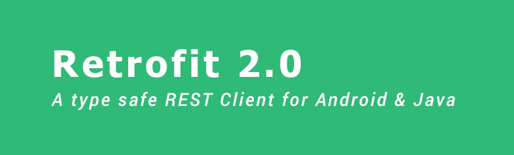Go check the lib: Retrofit
The problem :
- AsyncTask
- Mapping the http response
- Handling errors
Comparison
RxAndroid
Go check the lib: Rx Android
Pros
- Handling threads in an elegant way
- Work on loops
- Handling errors
Cons
- Harder to read
- Harder to debug
- Other way of thinking
Dagger
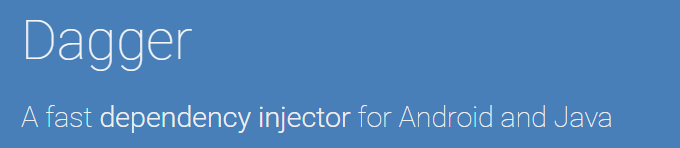Go check the lib: Dagger
Pros
- Simple access to shared instances
- Easier unit and integration testing
- Scoped instances
Cons
- Hard to setup
- Injection errors are a pain to debug
Retrolambda
Go check the lib: Retrolambda
Pros
Use features from java8Cons
Not 100% stableAlternative
Android N KotlinEventBus

Go check the lib: EventBus
Pros
- Simplifies the communication between components
- Decouples event senders and receivers
- Avoids complex dependencies and life cycle issues
- A simple way to handle threads
Cons
- Spaghetti Code
- Can't follow the event while debugging
Comparison
Other useful tools
Patterns
Model View Presenter
MVP

Pros
- Testable / Easy to get reviewed
- Maintainable
- Information Hiding
- Split the Activity / Fragment
Cons
- Redundant, especially when the app size is small
- Requires time before starting coding (but I bet, the architecture step is the must step for all development)
Show me the code
The Activity
The presenter
Cross platforms
Phonegap / Cordova
PhoneGap is a distribution of Apache Cordova. You can think of Apache Cordova as the engine that powers PhoneGap.
It provides mobile apps with HTML, CSS & JS, target multiple platforms with one code base, Free and open source
Titanium
Titanium is not an attempt at “write once, run everywhere”.
There is a core of mobile development APIs which can be normalized across platforms. These areas
should be targeted for code reuse.
There are platform-specific APIs, UI conventions, and features which developers should incorporate
when developing for that platform.

Xamarin
Build native apps for multiple platforms on a shared C# codebase and add native code.

Pros
- Speed: faster to develop, “write once, run everywhere” (unless, the application requires a lot of customization for each platform)
- Simplicity: Updates to your cross-platform app would, naturally, be instantly synced across all platforms and devices.
Cons
- Platform limitations: Each platform has its own unique style and affords certain flexibilities missing in others.
- Integration challenges: Data bases, shared prefs, notifications...
- User Experience
Sum up